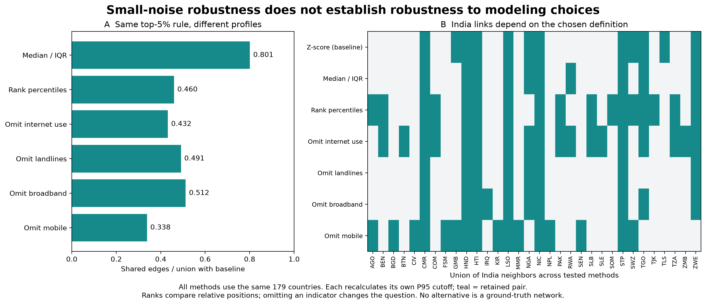
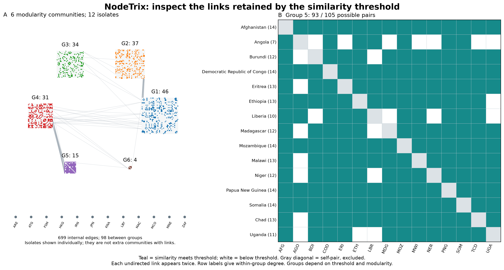
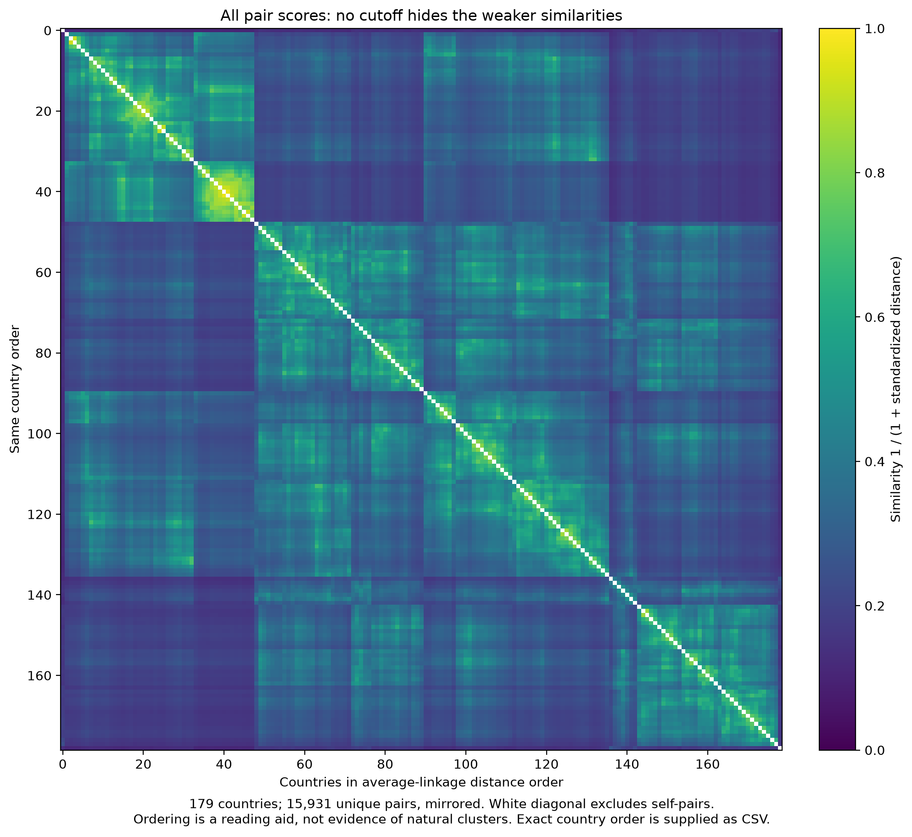

Does the similarity network answer the intended question?
Review dated 30 October 2026. Interactive network | Current report
Professor's advice and our implementation. Prof. Jaya Sreevalsan Nair approved derived similarities and suggested inspecting their distribution and filtering highly similar pairs. Our team chose P95 as an exploratory display setting; the professor did not prescribe that percentile. She mentioned perturbation as one possible approach. Our small-noise check tests a chosen threshold and does not implement a specified published selector.
1. What is correct, and what the result means
The same 179 complete 2020 profiles define every pair. Four indicators are standardized using population standard deviations. Euclidean distances become similarities through 1/(1+d). This monotone transform does not change pair rankings: a percentile cutoff selects the same pairs as a corresponding distance cutoff. The complete undirected graph has 15,931 pairs; filtering at 0.569763 retains 797. All nodes, including 12 isolates, remain.
These are similarities in measured profiles, not physical internet cables, traffic, causal relationships, p-values or probabilities. Complete-case selection also limits coverage. Equal standardized feature weights do not remove feature correlation or guarantee equal conceptual importance. The network addresses the four-indicator snapshot question; paths, change PCPs and distributions answer the temporal questions.

Replacement: Figure 1's old edge-retention curve largely repeated information already in the histogram. The new connectivity panel shows the consequence of filtering: how many countries remain in the largest component and how many become isolated. It uses 77 cutoffs from P80 to P99. Spring, Spectral and Circular still share exactly the same default edge list. The two former layouts arrange the connected core and separately pack isolates; distances in the drawing are not measured similarities.
77-cutoff table | Four reference cutoffs | Every pair score
2. Noise stability and modeling stability are different
The existing 30 seeded trials add Gaussian noise of standard deviation 0.02 to standardized coordinates and hold the original numerical threshold fixed. Their mean edge Jaccard is 0.922 (range 0.905-0.941). This is an illustrative sensitivity experiment: noise is not calibrated to measurement error. It neither selects P95 nor implements an identified published perturbation selector.

Here every alternative recalculates its own P95, retaining 797 pairs, so density does not explain differences in overlap. Median/IQR scaling reduces sensitivity to extreme marginal values; ranks compare relative positions instead of standardized magnitudes. Leave-one-indicator-out checks deliberately change the profile definition. These are sensitivity scenarios, not seven equally valid estimates of one known network. No labels or observed connections establish a winning metric.
| Method | Edges | Edge Jaccard | Isolates |
|---|
| Z-score (baseline) | 797 | 1.000 | 12 |
| Median / IQR | 797 | 0.801 | 11 |
| Rank percentiles | 797 | 0.460 | 3 |
| Omit internet use | 797 | 0.432 | 14 |
| Omit landlines | 797 | 0.491 | 8 |
| Omit broadband | 797 | 0.512 | 10 |
| Omit mobile | 797 | 0.338 | 13 |
Interpretation: a stable drawing or small-noise test cannot establish natural country groups. Keep the baseline for its clear four-indicator definition, and qualify all neighbor/community claims by that definition. India has 12 neighbors at the baseline, 10 under IQR scaling and 17 under ranks.
Exact metric comparisons and India neighbors | Noise trials | Computed research facts
3. Which alternative plots add information?

Retain NodeTrix for checking exact retained links inside locally dense groups. The update draws and labels all 12 isolates and calls the six groups modularity communities, avoiding confusion with connected components. Six communities are subdivisions of one 167-country component, not six disconnected networks. White cells mean below cutoff; all distinct pairs were measured. The original NodeTrix work supports the hybrid matrix/node-link representation, but this static report does not claim its interactive matrix-editing features.

New supporting view: this continuous matrix preserves weak scores hidden by binary filtering. Average-linkage ordering uses the original standardized Euclidean distances and is only a reading aid. Diagonal self-pairs are masked; each off-diagonal pair appears twice. It complements the labeled NodeTrix detail, but replacing that detail with 179 tiny labels would make exact pairs harder to read in print.
Country order | NodeTrix detail values
4. Alternatives considered and why they do not replace the default
| Alternative | Useful for | Decision for this report |
|---|
| Connectivity / percolation threshold | Studying when a network fragments | The highest cutoff keeping all countries connected is 0.239306 and retains 11,526 pairs (72.35%). Useful diagnostic, too dense for the intended high-similarity display. Brain-network research is motivation, not proof that its optimality transfers to these country profiles. |
| Maximum spanning tree | A connected 178-edge backbone | Forces connectivity and deletes cycles and many high-similarity pairs. A different question, so not a substitute for NodeTrix communities. |
| k-nearest neighbors | Local neighborhoods with a chosen neighbor count | Can retain weak matches for unusual profiles and gives no common similarity cutoff. Less direct than the instructor's distribution/filter recommendation. |
| Rank or robust scaling | Checking outlier and scale effects | Computed and displayed as sensitivity checks. A replacement would change what similarity means without an external validation target. |
| Cosine / country-profile correlation | Comparing direction or profile shape | May treat different absolute adoption levels as similar; four heterogeneous indicators are not repeated observations for inference. Not adopted. |
| Permutation significance / automated knee | Selection given a justified null or meaningful bend | No validated null, calibrated error model or target labels here. Shuffling each feature independently destroys real feature dependence. Do not label the strongest 5% statistically significant or invent a unique optimum. |
| Chord diagram / more force layouts | Presenting aggregate relationships | Add little to the required three-layout comparison and labeled matrix; dense ribbons impede exact-pair reading. No replacement. |
5. Research sources and reproducibility
From the ass2 directory run python scripts/network_threshold_revision.py, then python scripts/build_a1_style_report.py, python scripts/sync_report_delivery.py and python scripts/verify_story_report.py. The first command calls research_network_methods.py; it uses the supplied processed country table and independently checks the stored all-pair scores. Weather plots and the 30-figure allocation are preserved.